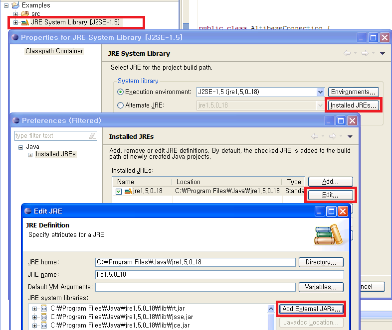
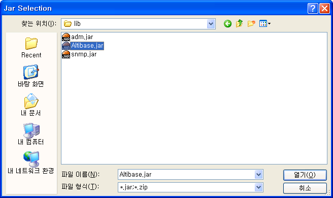
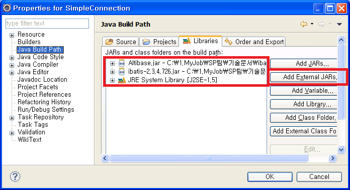
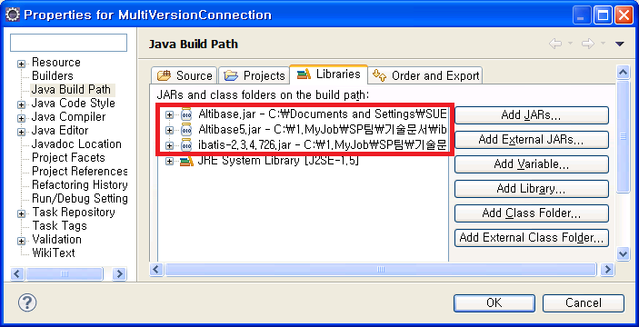

iBATIS에서 ALTIBASE를 연동하는 위해서는 ALTIBASE JDBC Driver를 setting하고 SqlMapConfig 파일에 ALTIBASE 를 위한 dataSource를 지정하면 된다. 본 장에서는 ALTIBASE JDBC Driver를 얻는 방법, JDBC Driver를 설정하는 방법, SqlMapConfig에 dataSource를 설정하는 방법에 대해 설명한다. 또한, FailOver 기능을 사용하는 방법, 여러 버전의 ALTIBASE와 연동하는 방법, Stored Procedure/Function을 호출하는 방법에 대해서도 살펴본다.
ALTIBASE JDBC Driver 얻는 방법
ALTIBASE에서 제공하는 JDBC driver는 Altibase.jar 파일이다. 이 파일은 ALTIBASE가 설치되어있는 서버의 $ALTIBASE_HOME/lib 디렉토리 안에 존재한다.
ALTIBASE 5버전부터는 $ALTIBASE_HOME/lib 디렉토리에 Altibase.jar 파일과 Altibase5.jar 파일이 존재하는데, Altibase.jar는 일반 JDBC Driver 파일이고, Altibase5.jar는 ALTIBASE 5버전과 그 이하의 버전을 함께 연동하고 싶을 때 사용하는 JDBC Driver 파일이다. 따라서 하나의 ALTIBASE DB와 연동하거나, 또는 버전이 동일한 여러 대의 ALTIBASE와 연동할 경우에는 $ALTIBASE_HOME/lib/Altibase.jar 파일을 사용하면 된다.
연동하려는 ALTIBASE DB Server와 ALTIBASE JDBC Driver가 호환 가능한지 확인을 위해 ALTIBASE JDBC Driver 버전 확인이 필요하다.
ALTIBASE JDBC Driver 버전을 확인하는 방법은 다음의 명령어를 수행하면 된다.
$ java –jar Altibase.jar JDBC Driver Info : Altibase Ver = 5.3.3.13 for JavaVM v1.4, CMP:5.6.1, $Revision: 14502 $ Jan 13 2010 14:35:28
이때, ALTIBASE DB Server의 cm protocol version과 ALTIBASE JDBC Driver의 CMP가 동일하면 호환 가능하다.
$ altibase -v version 5.3.3.13 XEON_LINUX_redhat_Enterprise_AS4-64bit-5.3.3.13-release-GCC3.4.6 (xeon-redhat-linux-gnu) Jan 13 2010 14:35:30, binary db version 5.4.1, meta version 5.6.1, cm protocol version 5.6.1, replication protocol version 5.4.1
버전이 UP 되면서 JDBC 관련 버그가 fix되었을 가능성이 있으므로, 일반적으로 ALTIBASE DB Server의 버전과 같거나 이 보다 더 최신의 ALTIBASE JDBC Driver 파일을 사용하는 것을 권장한다.
JDBC Driver에 설정하는 방법
다운로드 받은 JDBC Driver 인 Altibase.jar 파일은 classpath에 추가하거나 웹서버의 적절한 디렉토리에 위치시킨다.
만약, Eclipse를 사용하여 개발한다면 다음과 같이 해당 프로젝트에 ALTIBASE JDBC Driver를 추가할 수 있다.
프로젝트 – JRE System Library [DOCKI:J2SE-1.5] - Properties – Installed JREs – 항목 중 jre를 클릭 – Edit – Add External JARs 를 클릭하여 ALTIBASE JDBC Driver인 Altibase.jar를 추가한다.


SqlMapConfig 파일에 dataSource를 설정하여 ALTIBASE와 연동
SqlMapConfig 파일의 <transactionManager> 태그에 ALTIBASE 용 property를 지정하여 ALTIBASE와 연결하면 된다. 이 때 SqlMapConfig 파일에 직접 property 값을 입력할 수 있고, 또는 별도의 properties 파일을 작성하여 이 파일에 작성된 property값을 로딩하여 사용할 수 도 있다.
다음은 db.properties 라는 properties 파일에 ALTIBASE에 대한 property들을 정의하고, 이 property들을 읽어와 SqlMapConfig 파일에서 사용하는 예제이다.
예) SimpleConnection의 db.properties 파일
driver=Altibase.jdbc.driver.AltibaseDriver url=jdbc:Altibase://192.168.1.35:21129/mydb username=sys password=manager
이 파일에 설정된 각각의 값의 의미는 다음과 같다.
Property
설명
driver |
ALTIBASE JDBC driver class Name |
url |
ALTIBASE와 연결을 위한 Connection string정보 jdbc:Altibase://IP:port_no/db_name” 형태로 기입 |
username |
데이터베이스 계정 |
password |
데이터베이스 패스워드 |
예) SimpleConnection의 SqlMapConfigExample.xml 파일
<sqlMapConfig>
<properties resource="db.properties" />
<transactionManager type="JDBC" >
<dataSource type="SIMPLE"> -- SIMPLE은 내장된 트랜잭션 관리자이름
<property name="JDBC.Driver" value="${driver}"/>
<property name="JDBC.ConnectionURL" value="${url}"/>
<property name="JDBC.Username" value="${username}"/>
<property name="JDBC.Password" value="${password}"/>
</dataSource>
</transactionManager>
<sqlMap resource="Person.xml" />
</sqlMapConfig>
db.properties에 지정한 driver, url, username, password property들을 읽어와 dataSource의 JDBC.Driver, JDBC.ConnectionURL, JDBC.Username, JDBC.password property에 setting하고 있다.
위의 예제 SimpleConnection 프로젝트를 실행하기 위해서는 Altibase.jar, ibatis-2.3.4.x.jar 파일이 필요하다.

FailOver를 이용한 Connection
ALTIBASE 5.3.3부터 FailOver를 지원하는데, FailOver 기능을 사용하기 위해서는 dataSource의 Connection url을 적어주는 부분에 FailOver 관련 속성을 넣어주면 된다.
다음은 FailOver를 이용하여 ALTIBASE에 연결하는 예제이다. db.properties 파일에 Connection url 부분을 정의하였다.
예) FailOverSample의 db.properties 파일
driver=Altibase.jdbc.driver.AltibaseDriver url=jdbc:Altibase://192.168.6.224:21129/mydb? AlternateServers=(192.168.1.35:21129)& ConnectionRetryCount=1&ConnectionRetryDelay=1& SessionFailOver=on&LoadBalance=off username=sys password=manager
위의 파일에 지정한 Connection url 부분에 정의할 수 있는 FailOver 관련 property는 다음과 같다.
Property
설명| AlternateServer | 장애 발생시 접속하게 될 가용 서버를 나타내며 (IP Address1:Port1, IP Address2:Port2,...) 형식으로 기술한다. || ConnectionRetryCount | 가용 서버 접속 실패 시, 접속 시도 반복 횟수 || ConnectionRetryDelay | 가용 서버 접속 실패 시, 다시 접속을 시도하기 전에 대기하는 시간(초 단위) || LoadBalance | on으로 설정하면 최초 접속 시도 시에 기본 서버와 가용 서버를 포함하여 랜덤으로 선택한다. off로 설정하면 최초 접속 시도 시에 기본 서버에 접속하고, 접속에 실패하면 AlternateServer로 기술한 서버에 접속한다. || SessionFailOver | STF(Service Time Fail-Over)를 할 것인지 여부를 나타낸다.
on : STF, off : CTF
CTF(Connection Time Fail-Over)는 DBMS 접속 시점에 장애를 인식하여 다른 정상서버로 접속을 재시도하는 것을 의미한다.
STF(Service Time Fail-Over)는 서비스하는 도중에 장애를 감지하여 다른 가용 노드의 DBMS에 다시 접속하여 세션의 프로퍼티를 복구한 후 사용자 응용 프로그램의 업무 로직을 다시 수행할 수 있도록 하는 것을 의미한다. (STF는 DB접속에 대해서만 Fail-Over를 수행해주는 것이며 실패한 트랜잭션에 대해서는 사용자에 의해 재처리되어야 한다) |
위의 예제 FailOverSample 프로젝트를 실행하기 위해서는 “SqlMapConfig 파일에 dataSource를 설정하여 ALTIBASE와 연동”과 마찬가지로 Altibase.jar, ibatis-2.3.4.x.jar 파일이 필요하다.
ALTIBASE5와 이전 버전을 동시에 Connection
ALTIBASE 5부터는 하나의 어플리케이션에서 ALTIBASE 5와 ALTIBASE 4 혹은 ALTIBASE 3와 동시에 연결할 수 있도록 ALTIBASE 5 버전 전용의 JDBC Driver(Altibase5.jar)를 제공한다. 이 Driver를 이용하면 ALTIBASE 5 – ALTIBASE 4, 혹은 ALTIBASE 5 – ALTIBASE 3, ALTIBASE 5.1.5 – ALTIBASE 5.3.3 간 두 버전의 ALTIBASE에 접속이 가능하다.
기존의 Altibase.jar와 구별하기 위해 별도로 ALTIBASE 5 전용의 Altibase5.jar 가 필요하다. 또한 dataSource에 지정해주는 부분에 JDBC Driver 클래스 이름도 기존의 Altibase.jdbc.driver.AltibaseDriver 대신 ALTIBASE 5 전용의 Altibase5.jdbc.driver.AltibaseDriver를 지정해야 한다.
iBATIS에 다른 버전의 ALTIBASE 와 연동하기 위해서는 각 버전에 해당하는 SqlMapConfig 파일을 별도로 작성하여 어플리케이션에서 각각의 SqlMapConfig 파일을 읽어드리면 된다. 이 때 주의할 점은 프로그램에서 Altibase5.jdbc.driver.AltibaseDriver를 먼저 로딩한 후에 Altibase.jdbc.driver.AltibaseDriver를 로딩해야 한다는 것이다.
다음은 Altibase.jar와 Altibase5.jar 파일을 이용하여 두 버전의 ALTIBASE의 드라이버를 로딩하는 예제이다.
예) MultiVersionConnection의 db.properties1 파일
ALTIBASE 5 버전에 대한 설정
driver=Altibase5.jdbc.driver.AltibaseDriver url=jdbc:Altibase://192.168.6.224:21129/mydb username=sys password=manager
예) MultiVersionConnection의 db.properties2 파일
ALTIBASE 5 이전 버전에 대한 설정
driver=Altibase.jdbc.driver.AltibaseDriver url=jdbc:Altibase://192.168.1.35:21129/mydb username=sys password=manager
예) MultiVersionConnection의 SqlMapConfigExample1.xml파일
ALTIBASE 5 버전에 대한 설정
<sqlMapConfig>
<properties resource="db.properties1" />
<transactionManager type="JDBC" >
<dataSource type="SIMPLE">
<property name="JDBC.Driver" value="${driver}"/>
<property name="JDBC.ConnectionURL" value="${url}"/>
<property name="JDBC.Username" value="${username}"/>
<property name="JDBC.Password" value="${password}"/>
</dataSource>
</transactionManager>
<sqlMap resource="Person.xml" />
</sqlMapConfig>
예) MultiVersionConnection의 SqlMapConfigExample2.xml파일
ALTIBASE 5 이전 버전에 대한 설정
<sqlMapConfig>
<properties resource="db.properties2" />
<transactionManager type="JDBC" >
<dataSource type="SIMPLE">
<property name="JDBC.Driver" value="${driver}"/>
<property name="JDBC.ConnectionURL" value="${url}"/>
<property name="JDBC.Username" value="${username}"/>
<property name="JDBC.Password" value="${password}"/>
</dataSource>
</transactionManager>
<sqlMap resource="Person.xml" />
</sqlMapConfig>
예) MultiVersionConnection의 PersonApp.java파일
… String resource1 ="SqlMapConfigExample1.xml"; Reader reader1 = Resources.getResourceAsReader(resource1); SqlMapClient sqlMap1 = SqlMapClientBuilder.buildSqlMapClient(reader1); String resource2 ="SqlMapConfigExample2.xml"; Reader reader2 = Resources.getResourceAsReader(resource2); SqlMapClient sqlMap2 = SqlMapClientBuilder.buildSqlMapClient(reader2); …
위의 PersonApp.java 예제를 보면 Altibase5.jdbc.driver.AltibaseDriver를 Altibase.jdbc.driver.AltibaseDriver보다 먼저 로딩하기 위해 Altibase5.jdbc.driver.AltibaseDriver를 JDBC.Driver로 사용하는 SqlMapConfigExample1.xml 파일을 먼저 읽어드리고 있다. 반드시 ALTIBASE5 전용의 드라이버를 먼저 로딩해야 한다.
예제에 포함된 MultiVersionConnection 프로젝트를 실행하기 위해서는 기존에 사용했던 ibatis-2.3.4.x.jar 파일 뿐만 아니라, Altibase.jar와 Altibase5.jar 파일이 더 필요하다. 이 파일들은 ALTIBASE가 설치된 디렉토리($ALTIBASE_HOME)의 lib 디렉토리 안에 존재하는데 ALTIBASE 5 버전의 Altibase5.jar 파일, 그 이전 버전의 Altibase.jar 파일을 사용하면 된다.

Procedure/Function 호출
iBATIS에서 DB에 생성한 Stored Procedure/Function을 호출할 경우에는 SqlMap 파일에 Stored Procedure/Function에 정의된 parameter에 대한 정보를 설정해주고, <procedure> 태그에 CallableStatement에 적용되는 Procedure/Function을 호출하는 문장을 정의해주면 된다.
다음은 Stored Procedure/Function을 호출하는 예제이다.
예) ProcedureSample의 Procedure/Function 생성 구문
CREATE OR REPLACE PROCEDURE sum_proc ( p_num1 IN NUMBER, p_num2 IN NUMBER, p_num3 OUT NUMBER ) AS BEGIN p_num3 := p_num1 + p_num2; END; / CREATE OR REPLACE FUNCTION sum_func ( p_num1 IN NUMBER, p_num2 IN NUMBER ) RETURN NUMBER AS v_num NUMBER; BEGIN v_num := p_num1 + p_num2; RETURN v_num; END; /
예) Procedure의 Procedure.xml(SqlMap) 파일
<sqlMap namespace="Procedure">
<parameterMap id="ProcedureParam" class="java.util.Map">
<parameter property="p_num1" jdbcType="NUMERIC"
javaType="int" mode="IN" />
<parameter property="p_num2" jdbcType="NUMERIC"
javaType="int" mode="IN" />
<parameter property="p_num3" jdbcType="NUMERIC"
javaType="int" mode="OUT"/>
</parameterMap>
<parameterMap id="FunctionParam" class="java.util.Map">
<parameter property="p_num3" jdbcType="NUMERIC"
javaType="int" mode="OUT"/>
<parameter property="p_num1" jdbcType="NUMERIC"
javaType="int" mode="IN" />
<parameter property="p_num2" jdbcType="NUMERIC"
javaType="int" mode="IN" />
</parameterMap>
<procedure id="sumProc" parameterMap="ProcedureParam" >
{call sum_proc(?,?,?)}
</procedure>
<procedure id="sumFunc" parameterMap="FunctionParam" >
{call ? := sum_func(?,?)}
</procedure>
</sqlMap>
<paramaterMap> 태그에 Procedure/Function의 파라미터에 대한 타입과 IN/OUT 설정을 정의하고 <procedure> 태그에서 parameterMap 속성에 <paramaterMap> 태그의 id 값을 명시해준다. 그리고 <procedure> 태그에 Procedure/Function을 호출하는 문장을 작성해준다.
ProcedureSample 예제를 실행하기 위해서는 “SqlMapConfig 파일에 dataSource를 설정하여 ALTIBASE와 연동”과 마찬가지로 Altibase.jar, ibatis-2.3.4.x.jar 파일이 필요하다.
{kind=link}
{kind=link}
{kind=link}
{kind=link}